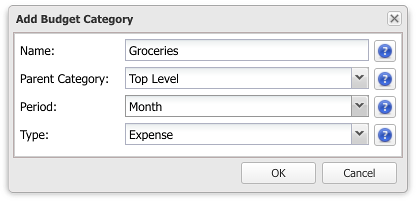
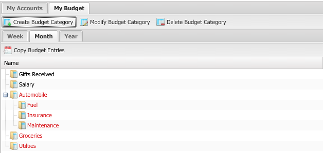
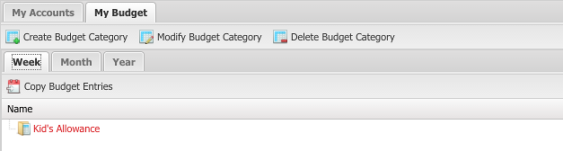

Buddi Live Tutorial - Setting up a Budget
The next thing to do is to set up your budget. All money which comes in to or goes out of an account in Buddi is associated with a Budget Category. You can use these categories to categorize income and expenses, which can help you to track where you money is going.
From a very high level, you should have at least 2 budget categories: one for income, and one for expenses. Most people will have many more than this, and will split the income and expenses into more specific categories. Some common income categories include 'Salary', 'Consulting Income', 'Gifts Received', etc. Common expenses would include 'Groceries', 'Clothing', 'Car Expenses', 'Utilities', 'Cell Phone', etc.
There is no single correct way to create Budget Categories. Some people use very fine divisions, and have a separate category for each of Phone, Heating, Electric, and Water utilities; others will just lump it all together under Utilities. Which way you decide to categorize your expenses is up to you. Making categories either too coarse or too fine makes it difficult to see patterns in your spending. When starting out, it is probably better to start with fewer categories, and then add more later if needed.

When creating budget categories, you can select a period. This determines the frequency of the budgeted amount. Most of the time 'Monthly' makes the most sense, but there are options for other periods as well. All the budget categories for a given period are shown together. In the below example you can see three budget periods: Weekly, Monthly, and Yearly. Note that mixing periods can make it difficult to see patterns in your spending; it is recommended to use only a single category (generally monthly) if possible.


Once you have set up your Budget Categories, you now need to decide how much to budget for each. This amount is the amount which you are planning to spend in one period (the most frequently used period is monthly, although you can change this for different categories). This amount forms the baseline for you, and helps you determine if you spent too much or not.
You can specify an amount for each category for a given period. In the grid view, you can also see the budgeted amount for the previous period, as well as the actual amount and the amount remaining. To edit an amount, simply click on the current value and edit the value. Below, you see that we have entered values for all our income and expenses.

You can move to different budget periods by using the control at the top right of the screen. The calendar arrow on the right goes to the next period; the one on the left goes to the previous period. The dates of the current period are shown in the field in between the arrows, as well as in the column names.

To duplicate all of last period's budgeted amounts to this period, change periods until the current period is empty and the previous period has budgeted values. Then, click the 'Copy Budget Entries' to copy all of the previous period values into the current period.
When you are first starting out at keeping a budget, it may be difficult to know how much to plan to spend. If you don't know, you can just make an estimate; you can always adjust this value at a later date.
The screenshot above shows the default Budget Categories, some of which have been assigned a budget value. Note that any which have not been assigned show up as a dashed line.